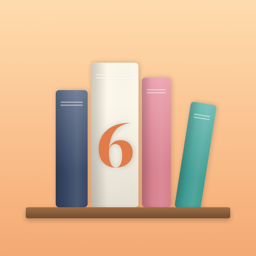

Privacy Policy
Effective October 14, 2026
The short version: Six Little Words has no ads, no tracking, and no accounts of its own. Your stories live on your phone and in your own iCloud. What you choose to share appears under a pen name, never your real name. You can delete it at any time.
This policy explains how Six Little Words (“the app”), made by The Dyslexia Code, LLC (“we”), handles information. The app is for people 13 and older.
What stays on your device and in your iCloud
- Your stories (your bookshelf) are stored on your iPhone and backed up to your own private iCloud account using Apple's iCloud. We cannot see them.
- Your settings (reminder time, pen name, preferences) are stored on your iPhone.
What you choose to share
- Share & Compare: stories you share, your pen name, reactions, chain links, prompt ideas, and votes are stored in the app's public iCloud database (operated by Apple) so other app users can see them. They show your pen name, not your name, email, or Apple ID. Automatic sharing can be turned off in Settings.
- Private circles: stories, prompts, chain links, and your optional circle photo shared in a circle are stored with Apple's iCloud sharing and are visible only to that circle's members. Circle members may see the name on your iCloud account, because circles are invitation-only. Your circle photo is resized and its location data is removed before upload.
- Reports: if you report content, we receive the report and a copy of the reported text so we can review it.
What we don't do
- No advertising, analytics, or tracking. We don't sell or share your information with anyone.
- No third-party code (SDKs) in the app.
- Your Apple ID, email, and contacts are never collected. iCloud identifies people to the app only by an anonymous ID.
Notifications and photos
Daily reminders are scheduled on your iPhone; no notification data leaves your device. If you choose a circle photo, the app can only access the single photo you pick.
Keeping it kind
Shared content is checked against a word filter, and people can report or block others. We review reports, usually within 24 hours, and remove content or writers that break the community rules.
Your choices and deleting your data
In the app, open Settings → Delete my data to permanently delete everything you've shared (stories, reactions, chain links, ideas, votes, pen name, circles you created, and your circle photo), or everything including your bookshelf. You can also remove any single shared story, or leave any circle, at any time. Deleting the app removes data stored on your phone; your bookshelf backup stays in your iCloud until you delete it in the app or in your iPhone's iCloud settings.
Children
Six Little Words is not directed to children under 13, and we do not knowingly collect information from them. If you believe a child under 13 has shared content, contact us and we will remove it.
Changes
If this policy changes, we'll update this page and its effective date.
Contact
The Dyslexia Code, LLC · danielle.pettifor@gmail.com